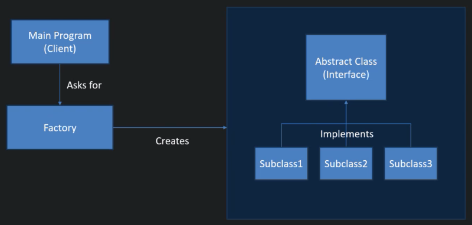

Bookmarks
C#
Week 9
What is Factory Method?
Factory Method is a creational design pattern that provides an interface for creating objects in a superclass, but allows subclasses to alter the type of objects that will be created.
You can create objects that you will need on the fly rather than having to hand-code every single object that will be needed.
Why use Factory?
Allows the program to be modular, flexible and easy to add new functionality to. Also more effiecient in storage.
Although this method may require longer to code and more lines of code, each individual section is much more compact. You can isolate classes which will consist of much fewer lines of code. A tidier, more organised and efficient method than one big chunky program.
Also if working in a group you can each work on different sections of the program at the same time without clashing.
If you are working on a multi-core computer you can write the code so that programs being processed are split between processors rather than if it were one chunk of code it would all have to be run through one.
- Modular (modular design divides a system into smaller more manageable parts) - If you encounter an error it's going to be far easier to pinpoint where it's come from and what needs to be changed. For example try finding an error in 3 lines of code compared to 30 lines of code.
- Flexible - If later on you need another class for a different function, you can easily add one, it's easily extendable.
The Design Pattern

The main program that contains a main method which acts as a starting point for the program and what is used as the client between program and user.
The Factory will be where different objects will be created depending on what is required from the client. So the Factory contains the superclass and all of the subclasses that may be needed. It receives a request from the client and runs only the classes that are necessary and returns the result back to the client.